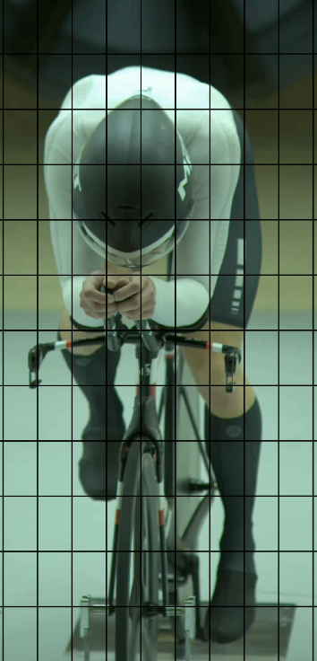
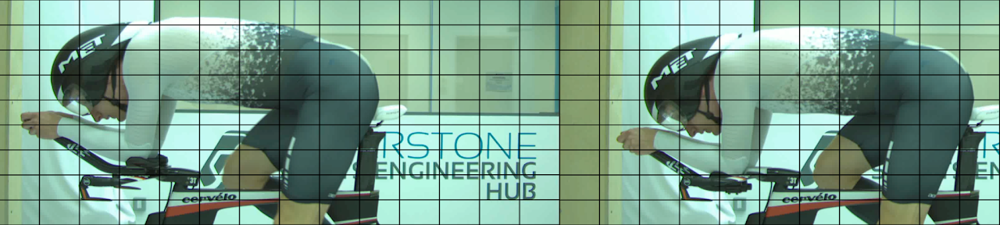
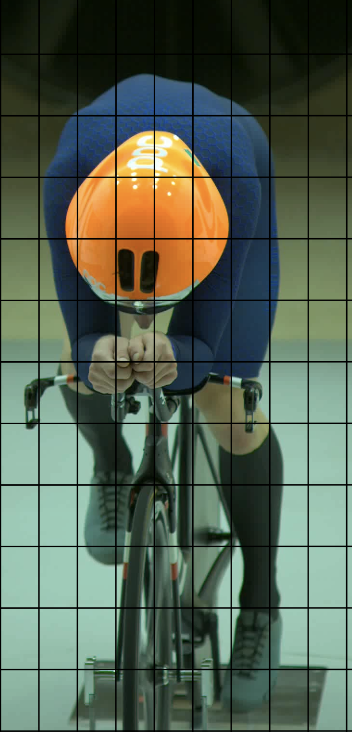
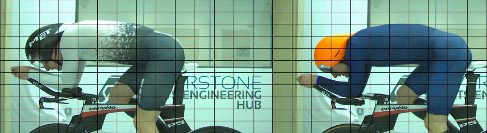
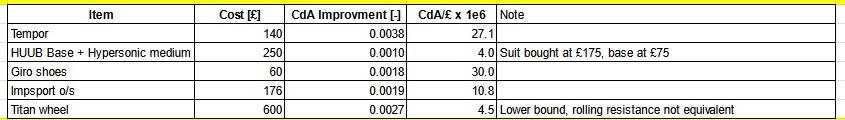
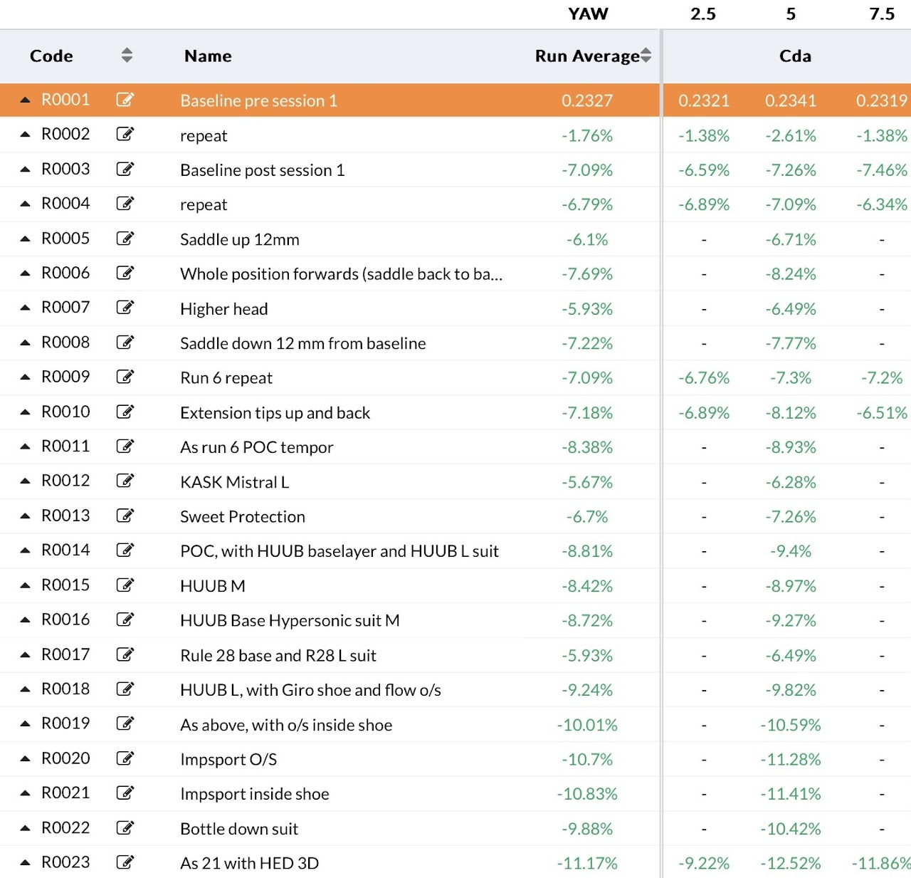

Wind Tunnel Testing 2024
This one has been a long time coming. The initial findings from the 2023 tunnel session, the subsequent custom part build, and a fair amount of winter desk research have all been aimed at producing more speed in the 2024 season. But at last, I am pleased to say, I am in a position to pen down some more Aerotica™.
Firstly, a huge shout out to Mike Hutchinson, who consulted on the session schedule, lugged a bunch of items for me to test, administered the wind tunnel proceedings, and provided a general calming presence and voice of reason in the heat of testing — all while feeling rather rough suffering from a cold. A huge thank you; I couldn’t have done it myself (and not just because the door at the tunnel locks from the outside so I couldn’t let myself out).
Session goals
This follow-up tunnel session aimed at three things:
- Verification of the implementation of the findings produced in the 2023 session (i.e. did I manage to replicate the gains found back in the 2023 session, in a robust and road-worthy bike configuration)
- Follow-up on some ‘unfinished business’ from 2023 session
- Fine-tuning of the equipment choices in the new position
While the first point is rather self explanatory, the other two deserve a word of explanation.
In the 2023 session, due to the complexity of the setup we were running, we only managed a very limited number of runs. This has left a few questions unanswered, such as: - Why getting ever so slightly more compact at the front end appears to produce significant gains at high yaw - Whether translating the entire position forward (i.e. pushing the saddle and the elbows forward by the same amount, and perhaps compensating the saddle height for the forward motion reducing the effective saddle height) without affecting the shape of the front end alters the CdA (this matters for me because, for power production reasons, I favour sitting really far forawrd, past of the bottom bracket)
As for the third point, my setup in terms of equipment has been put together largely ‘by eye’: I have implemented sensible rules of thumb on minimising CdA, like matching tyre width to the rim, or by taking inspiration from riders of similar stature, riding in similar position (though owing to my peculiar anatomy, the pool of riders I could steal ideas from was severely limited), and have done some limited field testing. The effectiveness and resolution of these methods is however less than perfect, and chances were that I was leaving quite a lot to chance. ## Position testing
We kicked off the proceedings by taking a couple of baselines. First, we tested the old position from before 2023, and then swapped the front end to the new custom one. There was a fair amount of noise in some of the baseline runs and their corresponding repeats; this was later attributed to the Flow suit, which can be a bit temperamental in terms placement of the seams. Looking back at the proceedings, we have actually speculated that this could happen, and that perhaps a smooth suit would’ve worked better for running baselines and for debugging the positions, but we ended up testing with the Flow as that was my last season’s race kit. Once we got onto skinsuits and ended up sticking with one of the smooth ones for the remaining test runs, the data variability decreased, which reinforces the ‘temperamental suit hypothesis’.
Even with the noise however, the direction of travel was clear. The CdA drop from the front end change alone was somewhere in the region of 6 percent (closer to 5 in the ‘good’ 2023 baseline run, closer to 7 in the ‘bad’ 2023 baseline repeat run). This is in line with the 2023 session, and perhaps a little better, since even though I do enjoy referring to my new front end as ‘the abominable bracket’, the 2023 test setup was more abominable still! This was the first major win of the evening and a sign of things to come.
Other position tweak included checking whether the saddle height made much difference at all; I rather hoped that high saddle wouldn’t turn out to be beneficial, as going so low on the front end stretched my glutes and compressed my quads even more, so lowering the saddle came in handy. Luckily, saddle up turned out to be marginally worse. Saddle down was also within noise; post session, during training I have found lowering the saddle beneficial (due to aforementioned stretch/compression), so it was nice to know there was no penalty to be paid for doing so - a small gain, if anything.
When it came to translating the entire position forward (elbows and saddle pushed forward by a couple of centimetres), that turned out to be actually rather good, landing us another 4 watts or so… Except for the suit had struck again, and the gains failed to materialise during a repeat. I was not too disheartened by that however, as the forward shift was not really meant to render me more aero, but to facilitate better power production, and that it does just fine.
One more thing to check was to estimate the aero penalty associated with riding head-up. This was not for any visibility reasons, I always ride with pretty good visibility of the road ahead, but because my neck is on the longer end of the spectrum, I wondered whether it is perhaps better to keep the head in-line with the body, instead of plugging the gap between the head and the arms. It was not. It was slower by a margin that was unlikely to have been caused by noise.


Helmets
With position testing done, we moved onto hardware.
Once again, perhaps we should have started with skinsuits, but we didn’t. We opted for helmets instead; helmets are easy and one can rattle through a number of tests pretty quickly, which was nice to do after the stressful part of position testing.
We started off with the Tempor and immediately saw 4-6 watts added onto the tally. My previous helmet, the MET Drone, sits quite nicely on me and integrates well with the back and shoulder blades; it does very little however in terms of sheltering my shoulders. Tempor shares the advantages of the Drone, while also extending much further to either side. It doesn’t exactly serve as a complete fairing like it does on some of the smaller, narrower riders, but it very clearly does a good job.

We knew Tempor was a hard act to follow, and we were right: neither of the other helmets tested (Kask Mistral and Redeemer Sweet Protection) got anywhere near. We had a few other helmets lined up, but these were conditional on another helmet from the same ‘family’ of design philosophy doing well; for example, we tested the Redeemer because Tempor did well and the ‘deflection around the shoulders’ design philosophy seemed to work well; similarly, we would have tested the Kask Bambino or a HJC Addwatt had Mistral tested well.
Skinsuits
At last we got around to testing suits. We had a few smooth suit + baseline combinations lined up, as well as the Impsport single layer. Sadly, I was not able to squeeze myself into the Impsport, even the largest one on offer, which was a shame as I had some big hopes for that garment. We did all size testing before starting the fan, and I would recommend doing that, as it is far too easy to loose precious minutes attempting to squeeze into a wrong size garment, and the equipment room is all the way down the stairs!
That left us with the HUUB and the Nopinz’s Hypersonic; we didn’t manage to source a Nopinz base layer, but tested both suits with HUUB’s Bridge. For HUUB we also tested both medium and large versions, to see if there was much difference associated with stretching out of the fabric. Unsurprisingly, the large (which is closer to the ‘proper’ size for me) tested slightly faster; interestingly, the Hypersonic in medium (the only one I had available) tested only marginally (within noise) slower than the HUUB in large; this begs the question whether a properly sized Hypersonic would exhibit a similar delta as the HUUB suits did. I think it is pretty likely that it would, so I’ll keep an eye on Nopinz promos!
In other news, the Rule28 suit did terribly - just was not cut out for me. That may be because the ones available at the SSEH have little pockets around the lower back area (almost like a standard cycling jersey), which for most people doesn’t make much difference as flow has long since detached further up-stream, but because of my very flat back position, this may be interacting with the flow in a nasty way. This however is, of course, pure speculation.
Footwear
After skinsuits it was time to give some attention to the feet and legs.
Honestly, I wasn’t expecting to find much here, but in the name of trusting the process I did acquire a pair of fairly narrow lace-up Giro Empire shoes. I got the second-hand for next to no money, and little did I know at the time that these would turn out to be the single best watts-per-quid performers of all items tested - and by some margin! It turns out that not only is the shape of the shoe better (perhaps due to being slightly narrower and not having any BOA dials), but also tested even faster by exposing the shoe to the wind, instead of hiding it under an overshoe. I achieved this by simply wearing my overshoe inside the shoe like a second pair of socks. With the overshoe on the shoe, the improvement was around 0.4% CdA - a good result by anyone’s reckoning. With the overshoe inside the shoe however, the improvement ballooned up to an insane 1.1% CdA. I was genuinely lost for words, but the evidence was solid. And that was not even the end of it: subsequent change of overshoe (worn on the shoe) resulted in another 0.7% CdA gain with respect to the previous best result, and wearing it inside the shoe generated yet another small but appreciable improvement of 0.15% CdA.
That’s roughly a total of 2% CdA improvement from a 60 quid pair of shoes paired with some funny socks. What’s wrong with this sport?
To summarise the gians and combinations: - Giro Empire with Nopinz overshoe on the shoe: -0.4% CdA improvement - Giro Empire with Nopinz overshoe inside the shoe: -0.7% CdA additional improvement - Giro Empire with Impsport overshoe on the shoe: -0.7% CdA additional improvemnt - Giro Empire with Impsport overshoe inside the shoe: -0.15% CdA additional improvement
That’s roughly 2% CdA improvement from a £60 second-hand pair of shoes paired with some funny socks. What’s wrong with this sport?
‘Hydration’ and wheels
At this point we were almost running out of time. We decided to do a couple of quick stand-alone tests. First one was to find out whether there was anything to be gained from some of those completely legitimate hydration systems (I can get really thirsty in a 10-mile event, it’s sweaty work!). In absence of the proper thing, I stuffed a buttle down my suit and ordered another facefull of wind. To my relief, it was a fair bit slower. I think it can be attributed to the fact that my position on the bike is extremely horizontal, to a point where the bottle adds more frontal area without doing much deflecting. The added bonus is that I can treat all the thirsty characters rolling up to the star line with (well calibrated) contempt.
Last but not least, my wheelset is not a great one; I have done what I could to make it as fast as it can be (short valves, matched tyre widths, and all that) but fundamentally they are a pair of wheels designed with the mk.I eyeball as the primary means of aero assessment, and chances were I was giving away some speed in that department. And, as it turned out, that was indeed the case: swapping my Sainsbury’s Basics trispoke for Mike’s Taste The Difference HED one produced the final gain of the session, to the tune of 1% CdA reduction.
Summary

All in all, looking at the pictures, the position doesn’t look all that different. It also doesn’t feel all that different. But it must be different, not only because the tunnel results but also because of how it has translated onto the road. I will entertain a longer, stand-alone post on the topic, but largely the gains as seen in tunnel testing have largely migrated pretty well to actual racing; it may be that the road CdA is a bit worse than the tunnel indicates, but in that case that likely also applied to the original position. Moreover, both absolute times and and SpinData scores have improved in-line with what I expected by straightforwardly applying the tunnel gains to my road CdA. I have been breaking PBs all over the place, some of which have been set with anywhere from 15 to 30 watts on top of what I am producing at this point in the season. This is extremely pleasing, as there are few things more frustrating than posting some good tunnel gains, just for them to prove elusive on the road!
Some further notes and observations:
- Having learnt how stressful it can be to do geometry changes under time pressure, I had rehearsed the procedures at home, bagged all relevant nuts and bolts into labelled bags, and generally tried to control the controllables; this paid dividends, as we managed to fit a huge number of tests, so would recommend thorough preparation to anyone planning their own session.
- For this session we have changed the yaw angles; while this makes it not consistent with the 2023 session, the objective was really to generate data of most practical significance. Zero yaw doesn’t really exist, as even riding straight into a head/tail wind one tends to wiggle on the bike, generating some small but appreciable effective yaw. Furthermore, after one accounts for shear (i.e. the fact that wind at ground level is a lot slower than the numbers one sees in weather forecast, which is given at a hight of ~10m above ground), yaw angles are surprisingly small; onlt on a handful of occasions have I ever dipped into double digits, and even that for only some sections of the course on a truly windy day. For those reasons we selected the angles of 2.5, 5 and 7.5 degrees.
- I have since purchased a lot of the equipment that has tested fast, and it was quite fun to find out which bits of equipment have provided best bang for my buck - you can find a table detailing this below, alongside with prices I have paid for each item. I am a bit of a second-hand king, and only buy new when sourcing a good quality used component is pretty much impossible. The only new item on the list was the Impsport overshoes, as these aren’t really present on the second-hand market.


- Of course, the above table is to be taken with a pinch of salt. Some prices I managed to find were better than others, and if I was to buy all new then the story would’ve been a lot different. What it does show though is that there’s some fairly low-hanging fruit out there.
- An eagle-eyed reader will have noted that the wheel we tested (a HED tri-spoke) is not quite the wheel I have ended up buying. I opted for the Titan because the exact HED wheel we tested is a bit of a gold dust, and most are ran tubular. The Titan is a bit more modern, can be ran tubeless/clincher, and, importantly, has been tested by Aerocoach on a Cervelo P5; this probably wasn’t the exact same P5 model I have, but I decided to call it as ‘close enough’. I mainly used the tunnel test to compare my old trispoke, which was a bit of an unknown entity, to pretty much any ‘competent’ wheel to decide whether there’s much to be gained from an upgrade; the HED happened to be what was available from Dr. Hutch’s wheel house.
Quick take-aways
Some practical notes for anyone planning their own tunnel session, fished out from the wider article:
- Prepare thoroughly. Having learnt how stressful geometry changes under time pressure can be, I rehearsed all procedures at home, bagged all relevant nuts and bolts into labelled bags, and generally controlled the controllables. This paid dividends — we fitted a huge number of tests into the session.
- Yaw angles. For this session we changed the yaw angles from 2023 (making the datasets not directly comparable, but more practically meaningful). Zero yaw doesn’t really exist in practice: even riding straight into a headwind one tends to wiggle on the bike, generating small but appreciable effective yaw. After accounting for wind shear (wind at ground level is much slower than the forecast figure, which is quoted at ~10 m height), yaw angles are surprisingly small — I’ve only rarely dipped into double digits. We therefore selected 2.5, 5, and 7.5 degrees.
- Suits. In hindsight, starting position testing in a smooth skinsuit rather than the Flow suit would have reduced noise and made debugging the positions easier.